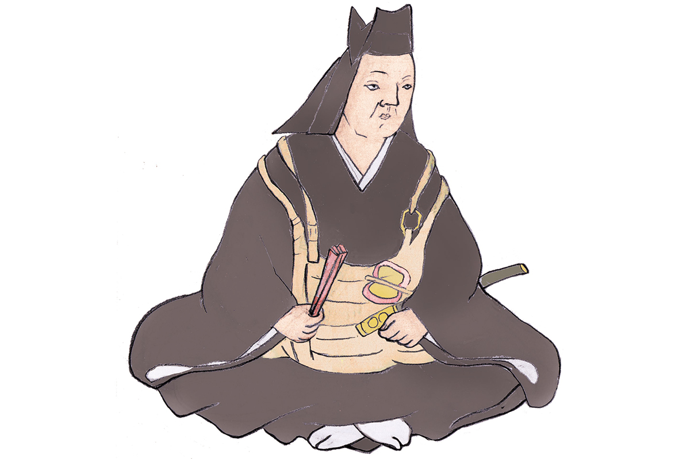
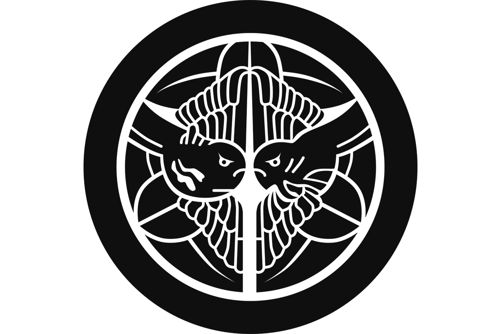
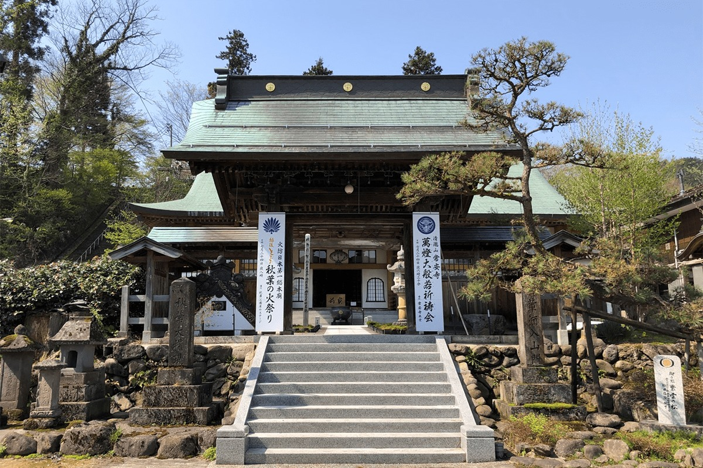

Префектура Ниигата · провинция Этиго · история
Кэнсин Уэсуги: «бог войны» из провинции Этиго

С конца XV до конца XVI века Япония жила в непрерывных войнах, и от той эпохи осталось множество полководцев-легенд. Среди них Кэнсин Уэсуги из провинции Этиго, нынешней префектуры Ниигата: его военные успехи признавали все, и потому его звали «богом войны».
Эпоха
Время воюющих провинций
В конце XV века сёгунат Муромати окончательно потерял власть, и вместо прежних наместников по всей стране поднялись местные военные правители, даймё. Почти сто лет они воевали друг с другом за земли. Японцы называют этот век эпохой Сэнгоку, «эпохой воюющих провинций», и именно он подарил больше всего полководцев, о которых до сих пор пишут книги и снимают сериалы.
Кэнсин Уэсуги прожил с 1530 по 1578 год. Он родился в провинции Этиго на побережье Японского моря, на месте нынешней префектуры Ниигата. Род его происходил из клана Нагао, но позже Кэнсин унаследовал имя и положение знатного дома Уэсуги.
Имён у него за жизнь сменилось несколько. В детстве его звали Торатиё, после совершеннолетия Кагэтора Нагао, затем Масатора Уэсуги и Тэрутора, а в истории он остался под монашеским именем Кэнсин.

Характер
Бог войны и любитель сакэ
До самой смерти в своём замке Касугаяма, в 49 лет по японскому счёту, Кэнсин вёл жестокие войны с сильнейшими соседями. Среди них были Нобунага Ода (1534–1582), начавший объединение Японии, и Удзиясу Ходзё (1515–1571), хозяин восточных земель вокруг нынешнего Токио. За природный талант полководца и почти непрерывные победы его прозвали «богом войны».
Главным соперником Кэнсина считают Сингэна Такэду (1521–1573), правителя соседней провинции Каи. Их армии пять раз сходились в битвах при Каванакадзиме, и эти сражения стали одной из самых известных страниц эпохи.
Знамя Кэнсина узнают сразу: на нём стоит один-единственный знак, первый иероглиф имени Бисямонтэна, буддийского бога-воителя. Кэнсин твёрдо верил, что сам он воплощение этого бога, и перед каждым походом запирался в зале Бисямонтэна, чтобы молиться о победе. Говорят также, что выпить он любил без меры.
Есть и версия, будто Кэнсин был женщиной. Она восходит к письму испанского моряка королю Филиппу II (1527–1598). Историки относятся к ней с большим сомнением, но в играх и телесериалах Кэнсина нередко показывают именно женщиной.
Слова о битве, которая впереди
Однажды к Кэнсину пришёл полководец, которого Сингэн Такэда разбил и выгнал из его владений. Сингэн любил говорить, что ценит будущие победы, потому что хочет захватить как можно больше земель. Кэнсин ответил иначе.
«Я не думаю о том, чтобы брать чужие земли, и не думаю о будущих победах. Для меня важна лишь битва, которая уже совсем близко»
Кэнсин Уэсуги
Жизнь
Главные даты
1530. Родился в провинции Этиго.
1536. Отец уходит от дел, главой рода становится старший брат, а маленького Торатиё отдают в буддийский храм.
1543. Обряд совершеннолетия и первый бой.
1548. Всё больше вассалов хотят видеть вместо брата Кагэтору, то есть Кэнсина. Он наследует главенство в роду и становится заместителем правителя провинции (сюго-даем).
1553. Едет в столицу и получает аудиенцию у императора Го-Нары (1497–1557) и у Ёситэру Асикаги (1536–1565), 13-го сёгуна Муромати. В том же году начинаются битвы с Сингэном Такэдой при Каванакадзиме.
1557. Даёт приют Норимасе Уэсуги (1523–1579), канрэю Канто, то есть наместнику сёгуна в восточной Японии, которого теснил Удзиясу Ходзё. Кэнсин наследует эту должность.
1561. После четвёртой битвы при Каванакадзиме борьба между войсками Уэсуги и Такэды почти прекращается.
1573. Подчиняет провинцию Эттю, нынешнюю префектуру Тояма.
1578. Умирает от болезни в замке Касугаяма.
Где увидеть
Храм Дзёан-дзи в Нагаоке
Храм Дзёан-дзи в городе Нагаока основал сам Кэнсин. Нынешние постройки возведены заново в 1979 году.

Храм Дзёан-дзи
- Адрес
- префектура Ниигата, Нагаока, Яти, 2-7-7
- Телефон
- +81 258-52-2318
- Сайт
- joanji.jp